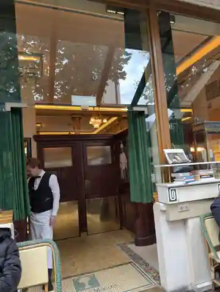
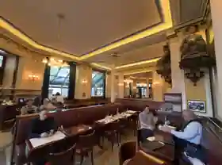
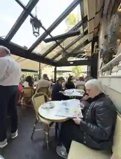
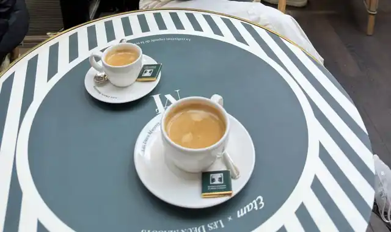

大約三十年前，我看過一本書，名字叫做《叫咖啡的地方》。
那時候的我，離巴黎很遠。網路還沒有把世界壓縮成幾下搜尋就能抵達的距離，一間遠方的咖啡館，真的只能存在於書頁、想像，以及某種說不太清楚的嚮往裡。也是從那本書開始，我知道巴黎有一個地方叫「雙叟」。
後來喝的咖啡愈來愈多，接觸的器材、豆子與沖煮也愈來愈深；咖啡慢慢從興趣，變成一種觀看世界的方法。可是「雙叟」一直沒有從心裡消失。它不像待辦清單上的景點，更像一個被擱在遠方的座標：也許有一天，我會真的走到那裡。

有些地方，在抵達以前，就已經陪了你很久。
不是打卡，是赴約
這次到法國，我終於走進聖日耳曼德佩。看見綠色棚架、藤編座椅、白色桌面，再看見門內的深色木作、黃銅與暖黃燈光，我第一個浮出的感覺並不是「名店」，而是：我來了。
那一刻很像赴一場遲到了三十年的約。
雙叟在 1884 年於聖日耳曼德佩廣場成為咖啡館，Verlaine、Rimbaud、Mallarmé 後來成為常客；1933 年創設的 Prix des Deux Magots，第一位得主是 Raymond Queneau。再往後，Sartre、Simone de Beauvoir、Hemingway 等人的身影，也讓這裡逐漸成為巴黎文學咖啡館的象徵之一。


我知道，今天的雙叟不可能還是那些年代的雙叟。觀光客來了，手機來了，世界換了一種速度。可是坐進去之後，我反而覺得這正是咖啡館有趣的地方：它不是博物館。只要人還願意坐下來，新的日常就會繼續疊在舊的日常上。


那杯咖啡，忽然變得很安靜
真的坐上位子以後，我沒有想像中那麼興奮地四處張望，反而有一點安靜。

白瓷杯放在桌上，小銀匙就在旁邊。以咖啡專業的角度，我當然可以去注意萃取、風味、杯感；可是那一天，這些判斷忽然都退到了第二層。
我喝的其實不只是一杯咖啡。
我喝的是三十年前翻過那本書的自己；是這些年一路累積下來對咖啡館、咖啡文化、器物與人的興趣；也是一個曾經只能從書裡想像巴黎的人，終於真的坐到了這張桌子旁。
真正讓我感動的，不是「我來過一間很有名的店」，而是某一段很長的時間，在那一刻忽然接了起來。
咖啡館，是讓時間有地方坐下來
我愈來愈覺得，一間重要的咖啡館真正留下來的，從來不只是配方與菜單。它留下的是人怎麼使用一個地方。
有人在這裡寫作，有人在這裡爭論，有人在這裡談戀愛，有人在這裡讀報；也有人像我一樣，隔了三十年才從書頁走進現場。咖啡只是讓人願意停留的理由之一，而停留本身，才慢慢累積成文化。
真正的朝聖，也許不是把一個傳說供起來，而是終於讓自己成為那個地方某一天、某一張桌子旁，非常普通的一位客人。

三十年前，我在一本書裡遇見雙叟。三十年後，我坐在這裡喝完了一杯咖啡。
離開時，我沒有覺得一個願望被「完成」了。比較像是那個一直留在遠方的地方，從此終於有了自己的溫度、光線、聲音，以及我確實坐過的位置。